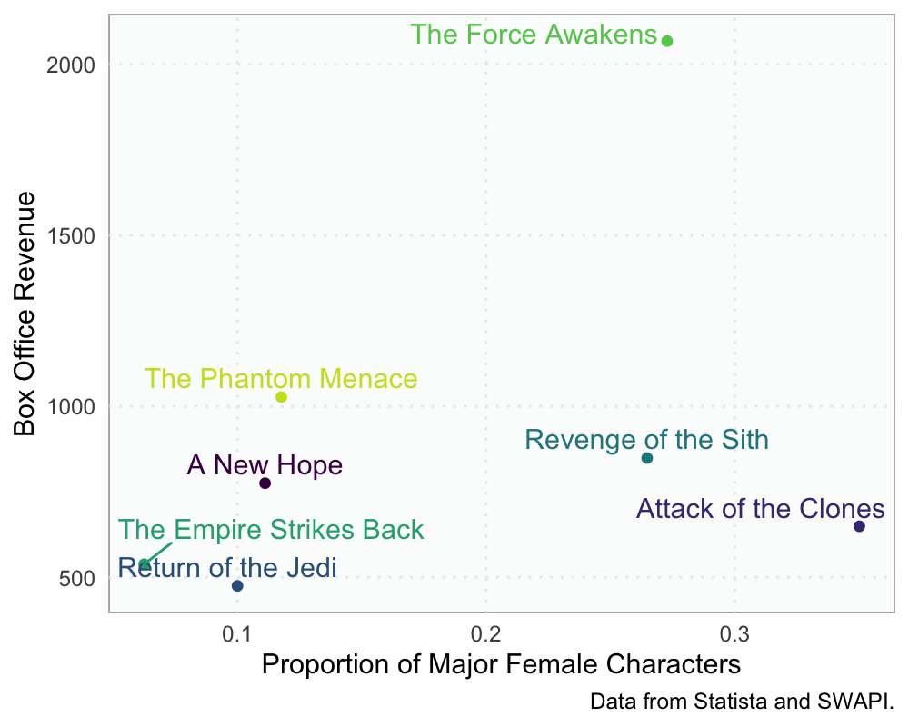

dtplyr and tidyfast are teaming up (well, at least in this blog post)
dtplyr, I’ve been wanting to write about how it can be used with tidyfast to use the syntax of the tidyverse while relying on the speed and efficiency of data.table. This workflow is…
With the advent of a more cohesive and complete dtplyr, I’ve been wanting to write about how it can be used with tidyfast to use the syntax of the tidyverse while relying on the speed and efficiency of data.table. This workflow is already being adopted by some, including Ivan Leung, who posted:
Refactoring an existing nested+mutate+map() with {tidyfast} equivalent has cut data processing time from 2.5 hrs to 30 min 🙇🏻 ♂️🙏🏼
— Ivan Leung (@urganmax) November 10, 2019
This is the first in this series of dtplyr and tidyfast posts—this one regarding nesting and unnesting data table into and from list-columns. This post uses tidyfast version 0.2.0 and dtplyr version 1.0.0.
TL;DR
dtplyr is an intutitive approach to using data.table while maintaining syntax from dplyr. It translates dplyr code to data.table and doesn’t evaluate the call until the user calls one of several functions (e.g. as.data.table(), as_tibble(), or as.data.frame()). The structure of using dtplyr can be summarized as:
lazy_dt(data) %>%
<dplyr code> %>%
<dplyr code> %>%
as.data.table()where <dplyr code> is any of the supported dplyr functions. This, particularly in larger data sets, has profound speed and, at times, efficiency improvements.
This general approach, that of using data.table “under the hood” while using the tidyverses explicit grammar of data manipulation, has been of interest to me over the past several months. It just happened to be around the time that Hadley Wickham picked up dtplyr again and reframed it in a way that allows data.table to do the heavy data lifting while still maintaining all the flexbility of the tidyverse.
Herein, it is also shown how tidyfast can be used in conjunction with dtplyr to nest and unnest data tables. This allows for a seamless nest-map-analyze type workflow.
Intro to dtplyr
The dtplyr package actually only has one function: lazy_dt(). This creates a speacial type of data.table that, in essence, records any dplyr call and saves it until we use something like as.data.table()—at which time the call is actually evaluated.
Let’s use the starwars data set from the dplyr package.
library(dtplyr)
library(dplyr)
library(data.table)
library(tidyfast)
starwars <- dplyr::starwarsThese data have 87 rows and 13 columns, a great situation (although many more columns and rows can certainly be handled) for some speedy computations.
Before starting any examples, in tidyfast there is a dt_print_options() function that adjusts the default printing options with data.table.
dt_print_options()For a simple example, we can filter some rows, add a new variable, and select columns.
starwars2 <- starwars %>%
lazy_dt() %>% # create the lazy_dt
filter(species == "Human") %>% # only humans
mutate(height_inch = height*0.3937) %>% # cm to inches
select(name, height_inch, homeworld, # select some vars
species)Since we haven’t called as.data.table() or as_tibble(), there haven’t been any actual evaulated calls yet. We can see what the data.table call looks like with:
show_query(starwars2)## `_DT1`[species == "Human"][, `:=`(height_inch = height * 0.3937)][,
## .(name, height_inch, homeworld, species)]To have it actually call, let’s save it as a data.table and then print it (but only a few of the variables).
starwars2 <- as.data.table(starwars2)
starwars2[] # the [] forces it to print## name height_inch homeworld species
## <char> <num> <char> <char>
## 1: Luke Skywalker 67.7164 Tatooine Human
## 2: Darth Vader 79.5274 Tatooine Human
## 3: Leia Organa 59.0550 Alderaan Human
## 4: Owen Lars 70.0786 Tatooine Human
## 5: Beru Whitesun lars 64.9605 Tatooine Human
## 6: Biggs Darklighter 72.0471 Tatooine Human
## 7: Obi-Wan Kenobi 71.6534 Stewjon Human
## 8: Anakin Skywalker 74.0156 Tatooine Human
## 9: Wilhuff Tarkin 70.8660 Eriadu Human
## 10: Han Solo 70.8660 Corellia Human
## 11: Wedge Antilles 66.9290 Corellia Human
## 12: Jek Tono Porkins 70.8660 Bestine IV Human
## 13: Palpatine 66.9290 Naboo Human
## 14: Boba Fett 72.0471 Kamino Human
## 15: Lando Calrissian 69.6849 Socorro Human
## 16: Lobot 68.8975 Bespin Human
## 17: Mon Mothma 59.0550 Chandrila Human
## 18: Arvel Crynyd NA <NA> Human
## 19: Qui-Gon Jinn 75.9841 <NA> Human
## 20: Finis Valorum 66.9290 Coruscant Human
## 21: Shmi Skywalker 64.1731 Tatooine Human
## 22: Mace Windu 74.0156 Haruun Kal Human
## 23: Gregar Typho 72.8345 Naboo Human
## 24: Cordé 61.8109 Naboo Human
## 25: Cliegg Lars 72.0471 Tatooine Human
## 26: Dormé 64.9605 Naboo Human
## 27: Dooku 75.9841 Serenno Human
## 28: Bail Prestor Organa 75.1967 Alderaan Human
## 29: Jango Fett 72.0471 Concord Dawn Human
## 30: Jocasta Nu 65.7479 Coruscant Human
## 31: Raymus Antilles 74.0156 Alderaan Human
## 32: Finn NA <NA> Human
## 33: Rey NA <NA> Human
## 34: Poe Dameron NA <NA> Human
## 35: Padmé Amidala 64.9605 Naboo Human
## name height_inch homeworld speciesIntegrating tidyfast and dtplyr
tidyfast can help in a few areas that dtplyr doesn’t cover (as of right now). The first, and the emphasis of this post, is with nesting and unnesting data into and from list-columns of data tables. A recent pre-print goes into more detail on the why of nesting/unnesting in your workflow (while introducing some basic code that tidyfast::dt_nest() and tidyfast::dt_unnest() were built on). It states in the abstract:
“[Using nesting provides] a cognitively efficient way to organize results of complex data (e.g. several statistical models, groupings of text, data summaries, or even graphics) with corresponding data. For example, one can store student information within classrooms, player information within teams, or even analyses within groups.”
To take advantage of this data analytic approach using data.table, dtplyr, and tidyfast, the user can use the following general workflow:
nested <- lazy_dt(data, immutable = FALSE) %>%
<dplyr code> %>%
<dplyr code> %>%
dt_nest(...)where ... are groups to nest by. Since dt_nest() automatically calls as.data.table() on anything other than a data.table object (in this case the lazy_dt), it will evaluate the dtplyr calls and then do the nesting all in that one line. Notably, the immutable = FALSE makes it so dtplyr isn’t making copies of the data. This becomes helpful when it comes to working with nesting/unnesting.
After doing all the necessary nesting data manipulations and analyses, we can then unnest with dt_unnest().
A Short Example
For example, we may want to analyze the starwars data by movie. The issue here is that the films are already in a list-column, as shown below:
select(starwars, name, species, homeworld, films)## # A tibble: 87 x 4
## name species homeworld films
## <chr> <chr> <chr> <list>
## 1 Luke Skywalker Human Tatooine <chr [5]>
## 2 C-3PO Droid Tatooine <chr [6]>
## 3 R2-D2 Droid Naboo <chr [7]>
## 4 Darth Vader Human Tatooine <chr [4]>
## 5 Leia Organa Human Alderaan <chr [5]>
## 6 Owen Lars Human Tatooine <chr [3]>
## 7 Beru Whitesun lars Human Tatooine <chr [3]>
## 8 R5-D4 Droid Tatooine <chr [1]>
## 9 Biggs Darklighter Human Tatooine <chr [1]>
## 10 Obi-Wan Kenobi Human Stewjon <chr [6]>
## # … with 77 more rowsSo we need to unnest that column and then nest by each film. To do so, we are going to use dt_hoist() and then dt_nest().
films_dt <- dt_hoist(starwars,
films)
films_dt ## The following columns were dropped because they are list-columns (but not being hoisted): vehicles, starships
## name height mass hair_color skin_color eye_color birth_year gender homeworld species films
## <char> <int> <num> <char> <char> <char> <num> <char> <char> <char> <char>
## 1: Luke Skywalker 172 77 blond fair blue 19 male Tatooine Human Revenge of the Sith
## 2: Luke Skywalker 172 77 blond fair blue 19 male Tatooine Human Return of the Jedi
## 3: Luke Skywalker 172 77 blond fair blue 19 male Tatooine Human The Empire Strikes Back
## 4: Luke Skywalker 172 77 blond fair blue 19 male Tatooine Human A New Hope
## 5: Luke Skywalker 172 77 blond fair blue 19 male Tatooine Human The Force Awakens
## ---
## 169: BB8 NA NA none none black NA none <NA> Droid The Force Awakens
## 170: Captain Phasma NA NA unknown unknown unknown NA female <NA> <NA> The Force Awakens
## 171: Padmé Amidala 165 45 brown light brown 46 female Naboo Human Attack of the Clones
## 172: Padmé Amidala 165 45 brown light brown 46 female Naboo Human The Phantom Menace
## 173: Padmé Amidala 165 45 brown light brown 46 female Naboo Human Revenge of the Sith
films_nest <- dt_nest(films_dt, films)
films_nest## films data
## <char> <list>
## 1: A New Hope <data.table>
## 2: Attack of the Clones <data.table>
## 3: Return of the Jedi <data.table>
## 4: Revenge of the Sith <data.table>
## 5: The Empire Strikes Back <data.table>
## 6: The Force Awakens <data.table>
## 7: The Phantom Menace <data.table>So films_nest has two columns, one is the film and the second is the data that goes with each film. This allows us to see the movies that are included in this data set and organizes the data in such a way to help us work with it within each film more safely.
Let’s start using dtplyr here. Below, we find the number of homeworlds represented in each movie and return a double vector (using map_dbl()) and get the counts of each gender represented in each movie, returning a data.table.
films_nest <- films_nest %>%
lazy_dt() %>%
mutate(num_worlds = purrr::map_dbl(data, ~length(unique(.x$homeworld)))) %>%
mutate(prop_genders = purrr::map(data, ~dt_count(.x, gender))) %>%
as.data.table()
films_nest[]## films data num_worlds prop_genders
## <char> <list> <num> <list>
## 1: A New Hope <data.table> 10 <data.table>
## 2: Attack of the Clones <data.table> 25 <data.table>
## 3: Return of the Jedi <data.table> 15 <data.table>
## 4: Revenge of the Sith <data.table> 23 <data.table>
## 5: The Empire Strikes Back <data.table> 11 <data.table>
## 6: The Force Awakens <data.table> 7 <data.table>
## 7: The Phantom Menace <data.table> 23 <data.table>Turns out we also have how much each movie grossed at the box office (according to Statista)
revenue <-
tibble::tribble(
~films, ~revenue,
"A New Hope", 775.4,
"The Empire Strikes Back", 538.4,
"Return of the Jedi", 475.1,
"The Phantom Menace", 1027.0,
"Attack of the Clones", 649.4,
"Revenge of the Sith", 848.8,
"The Force Awakens", 2068.2
) %>%
as.data.table()
films_nest <- films_nest[revenue, on = "films"]
films_nest## films data num_worlds prop_genders revenue
## <char> <list> <num> <list> <num>
## 1: A New Hope <data.table> 10 <data.table> 775.4
## 2: The Empire Strikes Back <data.table> 11 <data.table> 538.4
## 3: Return of the Jedi <data.table> 15 <data.table> 475.1
## 4: The Phantom Menace <data.table> 23 <data.table> 1027.0
## 5: Attack of the Clones <data.table> 25 <data.table> 649.4
## 6: Revenge of the Sith <data.table> 23 <data.table> 848.8
## 7: The Force Awakens <data.table> 7 <data.table> 2068.2With this information, we can extract the proportion of females represented in the movie and the box office revenue. We can do this in a few steps. First, let’s unnest the prop_genders variable. We will use dt_unnest() as it is designed to unnest columns with data tables. Notice that the other list-column (data) is dropped from this operation. This is partly a safety feature to avoid copying what could already be large data in the list-columns. 1
films_unnest <- dt_unnest(films_nest, prop_genders)
films_unnest## films num_worlds revenue gender N
## <char> <num> <num> <char> <int>
## 1: A New Hope 10 775.4 <NA> 3
## 2: A New Hope 10 775.4 female 2
## 3: A New Hope 10 775.4 hermaphrodite 1
## 4: A New Hope 10 775.4 male 12
## 5: The Empire Strikes Back 11 538.4 <NA> 2
## 6: The Empire Strikes Back 11 538.4 female 1
## 7: The Empire Strikes Back 11 538.4 male 12
## 8: The Empire Strikes Back 11 538.4 none 1
## 9: Return of the Jedi 15 475.1 <NA> 2
## 10: Return of the Jedi 15 475.1 female 2
## 11: Return of the Jedi 15 475.1 hermaphrodite 1
## 12: Return of the Jedi 15 475.1 male 15
## 13: The Phantom Menace 23 1027 <NA> 2
## 14: The Phantom Menace 23 1027 female 4
## 15: The Phantom Menace 23 1027 hermaphrodite 1
## 16: The Phantom Menace 23 1027 male 27
## 17: Attack of the Clones 25 649.4 <NA> 2
## 18: Attack of the Clones 25 649.4 female 14
## 19: Attack of the Clones 25 649.4 male 24
## 20: Revenge of the Sith 23 848.8 <NA> 2
## 21: Revenge of the Sith 23 848.8 female 9
## 22: Revenge of the Sith 23 848.8 male 23
## 23: The Force Awakens 7 2068.2 <NA> 1
## 24: The Force Awakens 7 2068.2 female 3
## 25: The Force Awakens 7 2068.2 male 6
## 26: The Force Awakens 7 2068.2 none 1
## films num_worlds revenue gender NUsing this, we can calculate, per film, the proportion of females represented.
prop_female <- films_unnest %>%
lazy_dt() %>%
group_by(films) %>%
mutate(sum_characters = sum(N)) %>%
filter(gender == "female") %>%
mutate(prop_female = N/sum_characters) %>%
as.data.table()
prop_female[]## films num_worlds revenue gender N sum_characters prop_female
## <char> <char> <char> <char> <int> <int> <num>
## 1: A New Hope 10 775.4 female 2 18 0.1111111
## 2: Attack of the Clones 25 649.4 female 14 40 0.3500000
## 3: Return of the Jedi 15 475.1 female 2 20 0.1000000
## 4: Revenge of the Sith 23 848.8 female 9 34 0.2647059
## 5: The Empire Strikes Back 11 538.4 female 1 16 0.0625000
## 6: The Force Awakens 7 2068.2 female 3 11 0.2727273
## 7: The Phantom Menace 23 1027 female 4 34 0.1176471With this info, we visualize how these relate.
library(ggplot2)
# set the theme
theme_set(
theme_minimal() +
theme(legend.position = "none",
panel.border = element_rect(color = "lightgrey",
fill = NA),
panel.background = element_rect(fill = "#FBFCFC"),
panel.grid.minor = element_blank(),
panel.grid.major = element_line(linetype = "dotted"))
)
# plot it
prop_female %>%
mutate(revenue = as.numeric(revenue)) %>%
ggplot(aes(prop_female, revenue, color = films)) +
geom_point() +
ggrepel::geom_text_repel(aes(label = films),
nudge_y = 50) +
labs(x = "Proportion of Major Female Characters",
y = "Box Office Revenue",
caption = "Data from Statista and SWAPI.") +
scale_color_viridis_d()
Looks like, at least in this very small sample, that more females that are major characters in the movies is somewhat positively related to box office earnings. This is largely driven by The Force Awakens. Without that one, it would look like there wasn’t really much of a relationship between the two.
Conclusion
This was a brief introduction to dtplyr and how it works with some tidyfast functions. Hopefully the workflow presented herein will be helpful.
sessioninfo::session_info()## ─ Session info ──────────────────────────────────────────────────────────────────────────────────
## setting value
## version R version 3.6.1 (2019-07-05)
## os macOS Catalina 10.15.1
## system x86_64, darwin15.6.0
## ui X11
## language (EN)
## collate en_US.UTF-8
## ctype en_US.UTF-8
## tz America/Denver
## date 2019-12-03
##
## ─ Packages ──────────────────────────────────────────────────────────────────────────────────────
## package * version date lib source
## assertthat 0.2.1 2019-03-21 [1] CRAN (R 3.6.0)
## backports 1.1.5 2019-10-02 [1] CRAN (R 3.6.0)
## cli 1.1.0 2019-03-19 [1] CRAN (R 3.6.0)
## colorspace 1.4-1 2019-03-18 [1] CRAN (R 3.6.0)
## crayon 1.3.4 2017-09-16 [1] CRAN (R 3.6.0)
## data.table * 1.12.6 2019-10-18 [1] CRAN (R 3.6.0)
## digest 0.6.23 2019-11-23 [1] CRAN (R 3.6.0)
## dplyr * 0.8.3 2019-07-04 [1] CRAN (R 3.6.0)
## dtplyr * 1.0.0 2019-11-12 [1] CRAN (R 3.6.0)
## evaluate 0.14 2019-05-28 [1] CRAN (R 3.6.0)
## fansi 0.4.0 2018-10-05 [1] CRAN (R 3.6.0)
## farver 2.0.1 2019-11-13 [1] CRAN (R 3.6.0)
## ggplot2 * 3.2.1 2019-08-10 [1] CRAN (R 3.6.0)
## ggrepel 0.8.1 2019-05-07 [1] CRAN (R 3.6.0)
## glue 1.3.1.9000 2019-11-29 [1] Github (tidyverse/glue@c02d7d4)
## gtable 0.3.0 2019-03-25 [1] CRAN (R 3.6.0)
## htmltools 0.4.0 2019-10-04 [1] CRAN (R 3.6.0)
## knitr 1.25 2019-09-18 [1] CRAN (R 3.6.0)
## labeling 0.3 2014-08-23 [1] CRAN (R 3.6.0)
## lazyeval 0.2.2 2019-03-15 [1] CRAN (R 3.6.0)
## lifecycle 0.1.0 2019-08-01 [1] CRAN (R 3.6.0)
## magrittr 1.5 2014-11-22 [1] CRAN (R 3.6.0)
## munsell 0.5.0 2018-06-12 [1] CRAN (R 3.6.0)
## pillar 1.4.2 2019-06-29 [1] CRAN (R 3.6.0)
## pkgconfig 2.0.3 2019-09-22 [1] CRAN (R 3.6.0)
## purrr 0.3.3 2019-10-18 [1] CRAN (R 3.6.0)
## R6 2.4.1 2019-11-12 [1] CRAN (R 3.6.0)
## Rcpp 1.0.3 2019-11-08 [1] CRAN (R 3.6.0)
## rlang 0.4.2 2019-11-23 [1] CRAN (R 3.6.0)
## rmarkdown 1.16 2019-10-01 [1] CRAN (R 3.6.0)
## scales 1.1.0 2019-11-18 [1] CRAN (R 3.6.0)
## sessioninfo 1.1.1 2018-11-05 [1] CRAN (R 3.6.0)
## stringi 1.4.3 2019-03-12 [1] CRAN (R 3.6.0)
## stringr 1.4.0 2019-02-10 [1] CRAN (R 3.6.0)
## tibble 2.1.3 2019-06-06 [1] CRAN (R 3.6.0)
## tidyfast * 0.2.0 2019-12-04 [1] Github (tysonstanley/tidyfast@a4b6cc2)
## tidyselect 0.2.5 2018-10-11 [1] CRAN (R 3.6.0)
## utf8 1.1.4 2018-05-24 [1] CRAN (R 3.6.0)
## vctrs 0.2.0 2019-07-05 [1] CRAN (R 3.6.0)
## viridisLite 0.3.0 2018-02-01 [1] CRAN (R 3.6.0)
## withr 2.1.2 2018-03-15 [1] CRAN (R 3.6.0)
## xfun 0.10 2019-10-01 [1] CRAN (R 3.6.0)
## yaml 2.2.0 2018-07-25 [1] CRAN (R 3.6.0)
## zeallot 0.1.0 2018-01-28 [1] CRAN (R 3.6.0)
##
## [1] /Library/Frameworks/R.framework/Versions/3.6/Resources/libraryFootnotes
Note that this post has been updated to show that
dt_unnest()no longer changes the variable types to characters. This bug has been fixed.↩︎